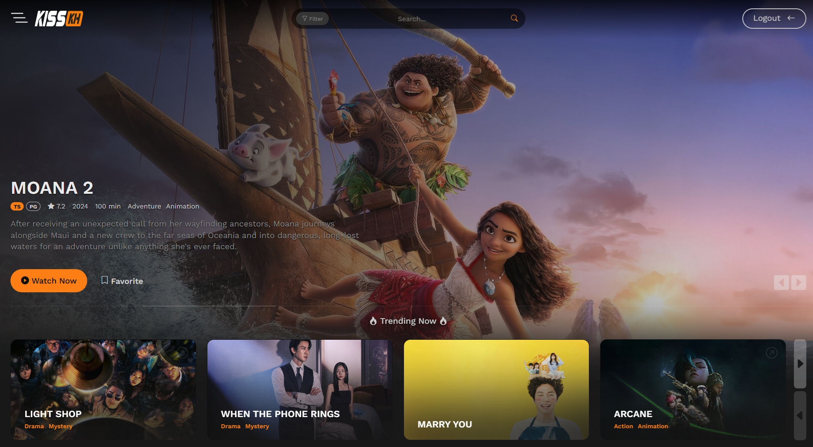

KissKh - Stream HD Asian Dramas, K-Dramas with English Subtitles & Dubs
- KissKh live
- KissKh TV live
- KissKh Official live
KissKh is a trusted platform for drama enthusiasts, offering a wide range of Asian dramas and K-shows, from timeless classics to trending hits. Whether you enjoy heartwarming stories or intense emotional journeys, KissKh has something for everyone. With HD and 4K streaming options, regular content updates, and a seamless user experience, KissKh provides global access to the best in drama entertainment.
I. Discover KissKH
Introduction to KissKH
- KissKH is a free streaming platform offering a diverse collection of Asian dramas, including K-Dramas, C-Dramas, and J-Dramas.
- Enjoy content from Korea, Japan, China, Thailand, and more, catering to drama lovers worldwide.
- Known for high-quality HD and 4K streaming, regular updates, and multilingual subtitles for a seamless viewing experience.
Why Choose KissKH for Drama Films?
- Drama films on KissKH feature emotional depth, relatable themes, and captivating storytelling.
- Genres include romance, historical, slice-of-life, crime, mystery, and more.
- KissKH offers effortless streaming, regular content updates, and a wide range of options for drama fans.
II. Core Features of KissKH
Extensive Drama Library
- Stream K-Dramas, C-Dramas, J-Dramas, and popular international hits.
- Explore curated collections like "Top Rated Dramas" and "Fan Favorites" to find the best shows.
Multilingual Subtitles
- Subtitles in English, Spanish, French, and more ensure accessibility for a global audience.
- Watch dramas in your preferred language for an enhanced experience.
User-Friendly Interface
- Easy navigation with categories like "New Arrivals" and "By Genre," plus advanced search filters.
- Search by title, actor, director, or release year to quickly find what you're looking for.
HD Streaming
- Watch in HD and Full HD for a sharp, immersive viewing experience.
- Multiple server options ensure smooth playback with minimal buffering.
Cross-Device Compatibility
- Stream on desktops, laptops, smartphones, tablets, and smart TVs without needing to install an app.
Free and Accessible
- All content is free to stream with no subscription fees.
- Optional registration unlocks personalized features like watchlists and history tracking.
III. Why Choose KissKH for Drama Films?
- Free Access to Premium Content: Stream high-quality Asian dramas and films at no cost.
- Global Drama Library: A diverse collection of K-Dramas, J-Dramas, C-Dramas, and more for all tastes.
- Regularly Updated Content: New episodes, films, and series are added regularly to keep the library fresh.
- Community Recommendations: Discover top-rated and trending titles through user reviews and ratings.
- Easy Navigation: KissKH’s simple interface makes it easy to find and enjoy your favorite dramas.
IV. Must-Watch Genres on KissKH
- Romantic Dramas: Heartfelt love stories like "Crash Landing on You" and "Eternal Love".
- Historical Dramas: Epic tales such as "Empress Ki" and "Ruyi’s Royal Love in the Palace".
- Crime & Thriller Dramas: Suspenseful titles like "Signal" and "The Bad Kids".
- Slice-of-Life & Family Dramas: Relatable and emotional series like "Reply 1988" and "Mother".
- Fantasy & Supernatural Dramas: Magical stories such as "Goblin" and "The Untamed".
- Inspirational Dramas: Uplifting films like "Hope" and "The Miracle in Cell No. 7".
V. How to Maximize Your Experience on KissKH
- Explore Curated Sections: Discover trending titles in "Top Rated" and "Editor’s Picks."
- Advanced Search Filters: Narrow down results by genre, year, or country for a personalized experience.
- Enable Subtitles: Watch with subtitles in your language of choice.
- Bookmark Favorites: Save films and shows to your watchlist for quick access.
- Stay Updated: Visit the “Latest Updates” section for the newest episodes and films.
- Use Community Reviews: Check user ratings and reviews to discover the best dramas.
VI. Legal and Safety Considerations
Content Hosting and Streaming
- KissKH uses third-party servers to stream content and complies with DMCA takedown requests.
Streaming Legality
- Streaming laws may vary by country—ensure you're aware of local regulations before using KissKH.
- We recommend using a VPN for additional privacy and secure access.
VII. Frequently Asked Questions (FAQs)
Is KissKH free?
Yes, all content on KissKH is free to stream without subscription fees.
Do I need an account to use KissKH?
No, you can watch without registering. Signing up provides extra features like watchlists.
Are subtitles available on KissKH?
Yes, KissKH offers subtitles in multiple languages.
Can I download films from KissKH?
No, KissKH is a streaming-only platform.
Is KissKH safe to use?
Yes, KissKH is safe, but using a VPN adds an extra layer of security.
What devices are compatible with KissKH?
Compatible with desktops, laptops, smartphones, tablets, and smart TVs.
How often is content updated?
New episodes and films are added daily.
What if a video doesn’t play?
Try refreshing the page, switching servers, or checking your internet connection.
VIII. Conclusion
Summary of KissKH’s Value: KissKH offers a wide range of free, high-quality dramas and films with multilingual subtitles for global audiences.
Final Thought: Start streaming on KissKH today and explore the rich worlds of your favorite dramas!